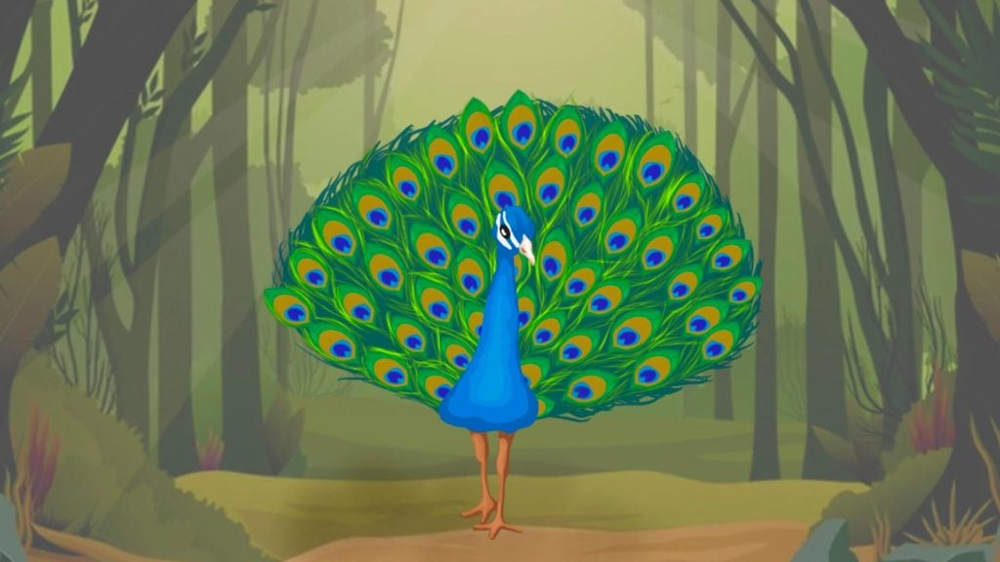

The sad Peacock

A stunning peacock with glittering feathers was dancing on a rainy day. As the rain was so pleasant, he was dancing with
happiness and started singing. But as he tried singing, his rough voice reminded him of his shortcomings as a singer. So
all the joy of the rain got beaten out of him as he dwelled on his flaw.
While the peacock was drowning in discontent in his ability to sing in the beautiful rain, a nightingale started singing
with joy while relishing the rain on a hot summer day. When the melodious voice of the nightingale reached the sad
peacock, it further reminded him about his flaw. He began wondering why he was cursed to have such a horrible voice
while the nightingale had such an appealing voice.
The forest goddess was doing her rounds in the forest that afternoon. She could see the whole forest was filled with joy
from receiving rain on a hot sunny afternoon. However, wandering in the woods, she noticed the peacock sobbing. It was
baffling to the goddess that out of all the creatures in the forest, the peacock who loved dancing in the rain was in
despair.
“Why are you upset in such wonderful weather?” the goddess asked the peacock.
The peacock complained about his hoarse voice and how unfortunate he couldn’t sing like a nightingale. “Why does the
nightingale have such a melodious voice? But I don’t? It is unfair that I cannot sing in this beautiful weather.”
The forest god listened to the sad peacock and calmly answered, “Everyone is special in their way. Everyone is born with
unique traits and characteristics that help them shine their way. Yes, the nightingale is blessed with a mellifluous
voice, but you are also blessed with your unique dancing talent. You can dance gracefully, flaunting your beautiful
glittering plumage. So please do not compare yourself with others; see what you have and make the best out of it. You’ll
never be happy with yourself if you constantly compare yourself to others.”
The peacock realized how silly he had been in comparing himself to others and forgetting his blessings. He realized that
everyone was unique in some way or the other.
Moral: Self-acceptance is the first step to happiness. Make the best of what you have, rather than being unhappy about
what you don’t.